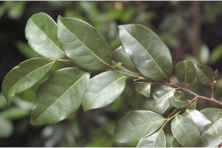
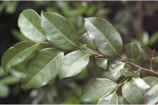

Small trees up to 5 m tall.
5 ಮೀ. ಎತ್ತರದವರೆಗಿನ ಸಣ್ಣ ಗಾತ್ರದ ಮರಗಳು.
Small trees up to 5 m tall.
சிறியமரங்கள் 5 மீ. உயரம் வரை வளரக்கூடியது.
Bark brownish, smooth.
ತೊಗಟೆ ಕಂದು ಬಣ್ಣದಲ್ಲಿದ್ದು ನಯವಾಗಿರುತ್ತದೆ.
Bark brownish, smooth.
மரத்தின் பட்டை ப்ரவுன் நிறமானது, வழவழப்பானது.
Branchlets terete, glabrous, lenticellate.
ಕಿರುಕೊಂಬೆಗಳು ದುಂಡಾಗಿದ್ದು ರೊಮರಹಿತವಾಗಿರುತ್ತವೆ ಹಾಗೂ ವಾಯುವಿನಿಮಯ ಬೆಂಡು ರಂಧ್ರಗಳ ಸಮೇತವಿರುತ್ತವೆ.
Branchlets terete, glabrous, lenticellate.
சிறியநுனிக்கிளைகள் குறுக்குவெட்டுத் தோற்றத்தில் வளையமானது, உரோமங்களற்றது, பட்டைத்துளைகள் (லெண்டிசெல்லேட்) உடையது.
Leaves simple, alternate, distichous; petiole 0.3-0.4 cm long, canaliculate, glabrous; lamina 6-8 x 3-4, elliptic to ovate- elliptic, apex acuminate and twisted, base acute, margin entire, glabrous beneath; midrib raised above; secondary_nerves ca. 6 pairs, domatia present at axils; tertiary_nerves broadly reticulate to obscure.
ಎಲೆಗಳು ಸರಳವಾಗಿದ್ದು ಪರ್ಯಾಯ ಮತ್ತು ಸುತ್ತು ಜೋಡನಾ ವ್ಯವಸ್ಥೆಯಲ್ಲಿದ್ದು ಕಾಂಡದ ಎರಡೂ ಕಡೆ ಎದುರು ಬದರಿನ ಲಂಬ ಸಾಲಿನಲ್ಲಿರುತ್ತವೆ;ತೊಟ್ಟು 0.3 – 0.4 ಸೆಂ.ಮೀ.ವರೆಗಿನ ಉದ್ದವಿದ್ದು, ಕಾಲುವೆಗೆರೆ ಸಮೇತವಿದ್ದು, ರೋಮರಹಿತವಾಗಿರುತ್ತದೆ; ಪತ್ರಗಳು 6 -8 X 3–4 ಸೆಂ.ಮೀ. ಗಾತ್ರ, ಅಂಡವೃತ್ತದಿಂದ ಅಂಡ-ಅಂಡವೃತ್ತದ ಆಕಾರ ಹೊಂದಿದ್ದು, ಕ್ರಮೇಣ ಚೂಪಾಗುವ ಮತ್ತು ತಿರುಚಿಕೊಂಡಿರುವ ತುದಿ, ಚೂಪಾದ ಬುಡ, ನಯವಾದ ಅಂಚು ಹೊಂದಿದ್ದು ತಳಬಾಗದಲ್ಲಿ ರೋಮರಹಿತವಾಗಿರುತ್ತವೆ;ಮಧ್ಯನಾಳ ಪತ್ರದ ಮೇಲ್ಭಾಗದಲ್ಲಿ ಉಬ್ಬಿರುತ್ತದೆ;ಎರಡನೇ ದರ್ಜೆಯ ನಾಳಗಳು ಅಂದಾಜು 6 ಜೋಡಿಗಳಿದ್ದು ಅಕ್ಷಾಕಂಕುಳಿನಲ್ಲಿ ಸೂಕ್ಷ್ಮ ಸಹಜೀವಿ ಗೂಡುಗಳನ್ನು ಹೊಂದಿರುತ್ತವೆ; ಮೂರನೇ ದರ್ಜೆಯ ನಾಳಗಳು ವಿಶಾಲ ಜಾಲಬಂಧ ನಾಳ ವಿನ್ಯಾಸಲ್ಲಿರುತ್ತವೆ ಅಥವಾ ಅಸ್ಪಷ್ಟವಾಗಿರುತ್ತವೆ.
Leaves simple, alternate, distichous; petiole 0.3-0.4 cm long, canaliculate, glabrous; lamina 6-8 x 3-4, elliptic to ovate- elliptic, apex acuminate and twisted, base acute, margin entire, glabrous beneath; midrib raised above; secondary_nerves ca. 6 pairs, domatia present at axils; tertiary_nerves broadly reticulate to obscure.
இலைகள் தனித்தவை, மாற்றுஅடுக்கமானவை, இருநெடுக்கு வரிசையிலையடுக்கம் (டைஸ்டிக்கஸ்); இலைக்காம்பு 0.3-0.4 செ.மீ. நீளமானது, குறுக்குவெட்டுத் தோற்றத்தில் கேனாலிகுலேட், உரோமங்களற்றது; இலை அலகு 6-8 X 3-4, நீள்வட்ட வடிவானது முதல் முட்டை-நீள்வட்ட வடிவானது, அலகின் நுனி அதிக்கூரியது மற்றும் திருகியது, அலகின் தளம் கூரியது, அலகின் விளிம்பு முழுமையானது, உரோமங்களற்றது; மையநரம்பு மேற்புறத்தில் அலகின் பரப்பைவிட உயர்ந்து இருக்கும்; இரண்டாம் நிலை நரம்புகள் 6 ஜோடிகள், டொமேசியா நரம்புகளின் கோணங்களில் கொண்டவை; மூன்றாம் நிலை நரம்புகள் அகன்ற வலைப்பின்னல் போன்றவை முதல் கண்களுக்கு புலப்படாது.
Flowers solitary, axillary.
ಹೂಗಳು ಒಂಟಿಯಾಗಿದ್ದು ಅಕ್ಷಾಕಂಕುಳಿನಲ್ಲಿರುತ್ತವೆ.
Flowers solitary, axillary.
மலர்கள் தனித்தவை, இலைக்கோணங்களில் காணப்படுபவை.
Cluster of 1-seeded ovoid berries.
ಒಂದು ಬೀಜವುಳ್ಳ, ಅಂಡಾಕಾರದ ಬೆರ್ರಿಗಳು ಗೊಂಚಲುಗಳಲ್ಲಿರುತ್ತವೆ.
Cluster of 1-seeded ovoid berries.
கொத்தான 1 விதையுள்ள முழுச்சதைகனி (பெர்ரி), முட்டை வடிவம்.
 
